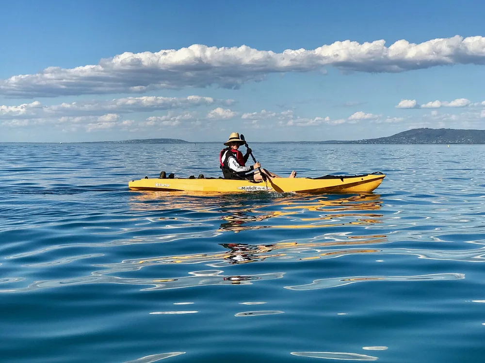

Paddles, big playgrounds and a beach when you want one.
Lake Macquarie works best when you choose one side of the lake as your base. Mix a paddle or foreshore picnic with one separate beach or playground outing, leaving plenty of time to relax together.
Our pick: A family paddle and a foreshore picnic are the natural starting point. Choose either Caves Beach or Speers Point as a separate outing, depending on your base.
FIVE IDEAS · PICK WHAT SUITS THE CREW
What we could get up to.
Time allowances and family-fit suggestions are our planning judgement. Check current opening hours, conditions and operator requirements before committing.
01
Family kayaking or SUP
Paid hire or tour
Allow half a day

Representative kayaking photo · Port Phillip Bay, Victoria; not the local operatorPhoto credit ↗
Choose a sheltered launch and a route suited to the group with a local operator. The lake gives the families a different kind of water adventure from a surf beach.
For our crew Ask about younger children, double kayaks, lifejackets and supervision.
Before we go Check wind, weather and operator advice. Avoid exposed water or channels beyond the group’s ability.
Representative playground · Norris Bank, Victoria; not Speers Point ParkPhoto credit ↗
This is a useful big-playground outing for a mixed-age group. Make it a picnic stop and let the younger kids lead the pace instead of trying to add several other attractions.
For our crew Especially appealing to the younger children; older kids may prefer a shorter visit.
Before we go Check travel time from your chosen base and bring sun protection.
Visit the sea caves only when the tide and sea conditions allow safe access. If that does not work, keep the outing to a beach walk or a patrolled swim rather than forcing the cave plan.
For our crew An interesting family outing with close supervision on uneven surfaces.
Before we go Time it for a suitable low tide, watch the swell and keep a clear route out.
Choose a short out-and-back section of this shared path for a bike or walking outing. The goal is a comfortable family ride, not completing the whole track.
For our crew Good for kids with suitable bikes and confidence on shared paths.
Before we go Check your start point, helmets, route distance and bike-hire availability.
Lake Macquarie from Swansea · lakeside sceneryPhoto credit ↗
Leave an afternoon free for a picnic, games and downtime close to where you are staying. A Swansea-side cabin base can also make it easy to combine the lake with a separate coastal stop.
For our crew A flexible all-age option without a fixed timetable.
Before we go Confirm park facilities and pool access; check local water conditions before any swim.